This beautiful faux finish is composed of 3 colors. The base coat is an off white color. The colors we used to mix our glaze are listed in the FREE e-book you get with any of our kits as well as the formula to mix a sample at Lowes or Sherwin Williams.
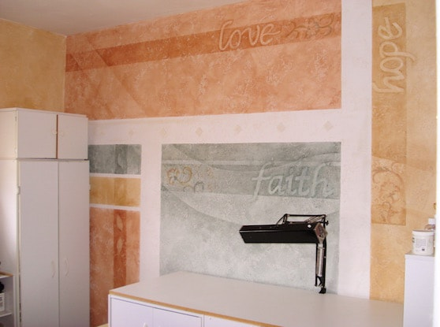
1) Basic Faux Painting Kit
(included with any of our Combo kits).
To buy yours today, visit our Faux Painting Store.
2) Texture paint (optional). You can make your own by mixing joint compound with satin wall paint. Mix until the consistency is like tooth paste.
3) Blue tape, stencil (optional) and freezer paper (optional) or regular paper.
1) Add texture with Tuck and Gather tool (included in Basic Kit). You can see how to do so on the following page: Texture Paint. Then let dry. You can always skip this step and just faux paint on regular wall surface.
2) Paint your base coat with a SATIN sheen. We used an extra Multi Color Faux Palette and applied our paint with a brush, but you can always apply directly from a paint can or use a roller.
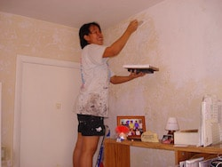
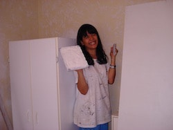
3) Mix your glazes. We used Florentine Brass, Fox Fire and Teal blue. You can get the formula for our colors on our FREE E-Book you get with any kit. Then load the Multi Color Faux Palette with 2 sections of each color.
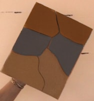
4) Tape off your wall with blue tape, dividing the sections with whatever measurement you desire. Then, press the Poofy Pad onto each color, one at a time, and wash the texture with it. Follow instructions on the Faux Painting Workshop DVD that is included in the Basic Faux Painting Kit.
Once you take off the tape, you can stop here or continue with next steps.
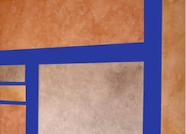
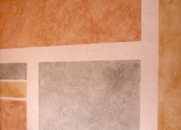
6) Tape freezer paper to mask off a curved shape or just use the tape. Then gently add a soft layer of the same colors along the OUTSIDE edge of the paper or tape.
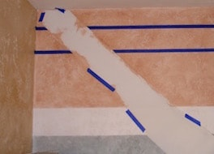
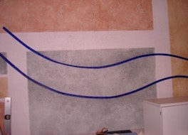
7) Tape border at the top and color wash another layer of color inside the tape. Tape letters cut out of paper or use letter stencils, then gently add a soft layer of the same colors, just along the OUTSIDE edge of the letters. Do the same with leaves. This will make the inside look lighter and stand out, as you can see by last picture. And finally, you can choose to add some stencil work, using the same colors.
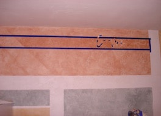
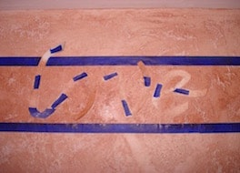
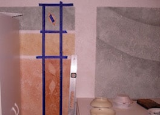
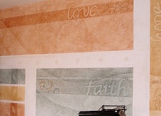

Our BASIC KIT INCLUDES Multi Color Faux Palette, 2 Poofy Pads, 2 Tuck and Gather tools and Workshop DVD. It's now on sale for only $41.99 for a limited time.
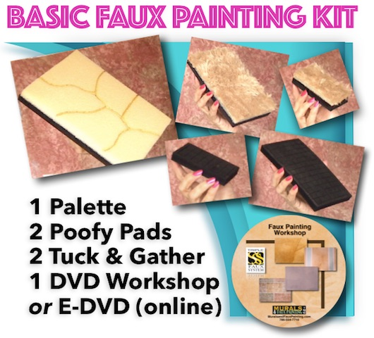

(This kit includes Basic, Faux Marble, Faux Wood Kit and tools for texturing)
*FREE Priority Shipping and Color Idea E-book